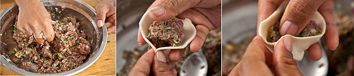

When your dough and filling are both ready, it is time for the tricky part of making the dumpling shapes. For this, place the dough on a chopping board and use a rolling pin to roll it out quite thinly. It should not be so thin that you can see through it when you pick it up, nor should it be quite as thick as a floppy disk for a computer (remember those? :-). Somewhere between those two should work out. After you have rolled out the dough, you will need to cut it into little circles for each momo. The easiest way to do this is turn a small cup or glass upside down to cut out circles about the size of the palm of your hand. That way, you dont have to worry about making good circles of dough because each one will be the same size and shape.
